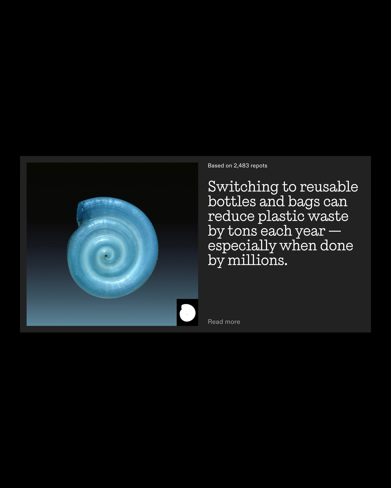
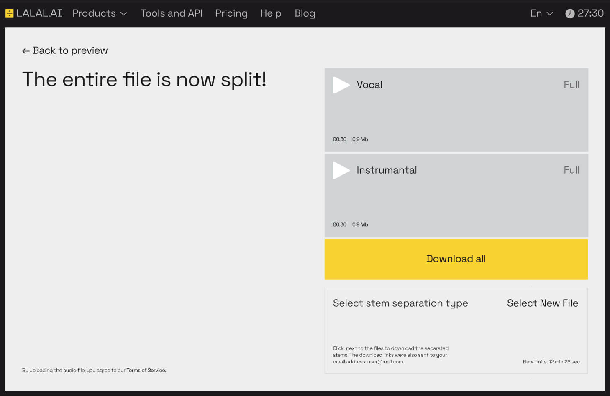
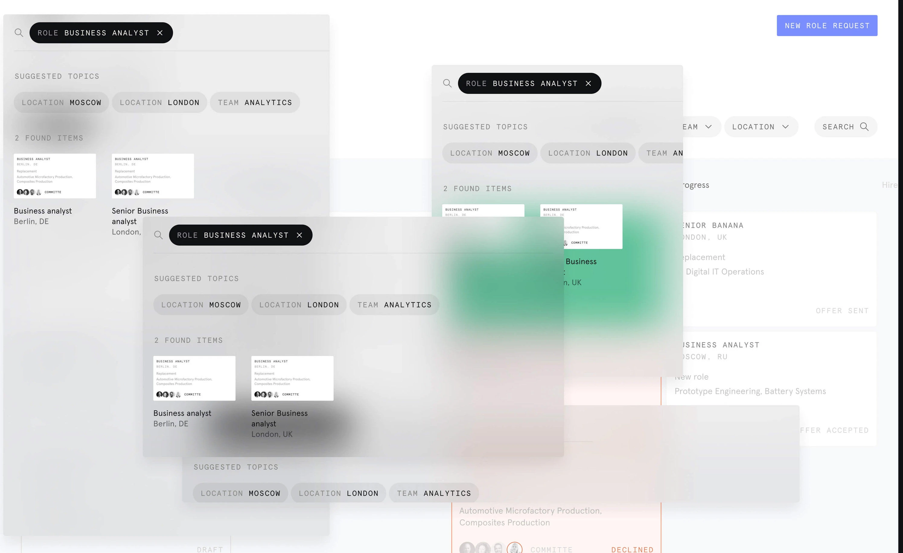
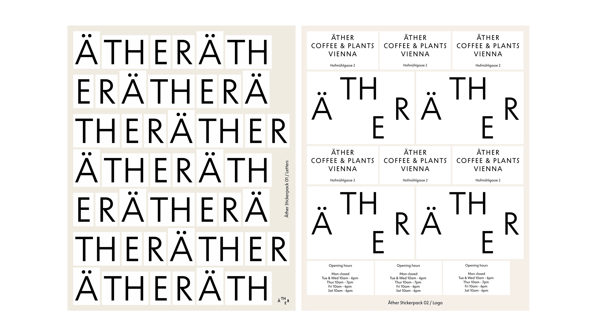

Алексей начинал с принтов на футболках, сейчас дизайн-директор в Pragmatica. В студии «дизайн-культуру» называют ДНК: не декор, а среда, в которой живёт группа. Ещё в школе, на городском сборе, он вышел на презентацию с пустым листом А4 и убедил зал. С тех пор для него полдела нарисовать, полдела подать.
Как ты понимаешь дизайн-культуру? Что для тебя в её основе?
Дисклеймер, если что: мне только дай о дизайне пофилософствовать. Буду давать ответ в неформальной форме, как монолог.
Я никогда не сплитовал эти два слова — «культура» и «дизайн». Внутри мы прямо использовали «дизайн-культура». Думаю, разницы особой нет: каждый что-то в себя вкладывает.
Если говорить на студийный уровень, когда речь про группу дизайнеров, которые занимаются одним общим студийным делом, мы это часто называем «дизайн-ДНК» или «дизайн-код». Это совокупность принципов, общих целей, миссий, взглядов на дизайн и вообще всего, что вокруг него; то, что объединяет нас как группу людей, которые вместе работают. Такой клей, в котором мы варимся.
Я стараюсь смотреть шире. Я не разграничиваю дизайнера и культурный контекст. Я считаю, что это часть чего-то общего. Всё вокруг — дизайн в широком смысле, и есть какие-то общие принципы, закономерности. Я стараюсь из всего впитывать и потом заворачивать это в проектную деятельность. У каждого что в моменте болит, то и выхватываешь.
Общий «look and feel» — термин, который мы используем внутри последнее время. Как это выглядит? Как чувствуется? То, что выглядит свежо, инаково, в чём есть инновация, откликается больше. Закостенелость визуала со временем мозолит и надоедает. Поэтому мы ищем что-то, что отдаёт свежестью. С другой стороны — отсюда и прагматика: это какой-то баланс, ещё и вне времени. Мы стараемся доходить до чего-то, что является рабочей штукой и может жить вне трендов. Структурным, рабочим.
Что-то, что нас драйвит, что нам интересно, супер важно. Если что-то ёкает — это уже что-то, что имеет смысл. А самое плохое, что сразу уходит из фокуса и в дизайн-культуру не читается, это что-то посредственное, какие-то пустышки, в чём нет смысла. Это лучше и не делать в принципе.
Почему ты выбрал дизайн как профессию?
У меня есть преза, где я про свой путь в дизайн выступал перед начинающими дизайнерами. Но штука такая: когда я начинал, я вообще не думал про дизайн в целом. Я начал рисовать. Путь у меня скорее пошёл через иллюстрацию, для многих цифровых дизайнеров путь идёт через иллюстрацию, особенно в то время.
Что мне нравилось визуально, я хотел повторять, тянулся к референсам. Скейтерские граффити-штуки перерисовывал. Будучи школьником, начал рисовать на футболках, продавать свои принты. С этого перескочил на тему сотрудничества с брендами футболок и одежды. Первая моя работа была дизайнером в местной екатеринбургской ритейл-штуке.
Так я попал в дизайн, просто потому, что рисовал. А дальше начал впитывать, что дизайн сильно шире, чем только то, что нарисовано. Со временем понял, что нужно обогатить образование чем-то более системным. В магистратуре получил классическое дизайнерское образование. Первое образование вообще было — социальная работа.
В дизайн можно прийти и потом — это подтверждение того, что здесь очень важен общий культурный бэкграунд. Хороший дизайнер, особенно хороший арт-директор, это тот, кто много чего повидал, многое переживал и переосмысливал. Этот культурный опыт позволяет тебе проектировать что-то — тебе легче сопоставить себя с поведением других людей.


Один из самых ярких кейсов — супер древняя вещь, когда я ещё не был ни дизайнером, ни иллюстратором.
В школе у нас были сборы — все классы со всего города собирались на один общий сбор. Была определённая тема, и нам нужно было выступить с презентацией: как ты видишь будущее своей школы. Дают задание — расходитесь по комнатам.
Мы что-то протупили: вместо того, чтобы что-то делать, сидели и играли в карты. Дедлайн, пять минут, надо выходить, а у нас просто белый лист. И мы не придумали ничего лучше, как выйти с белым листом. Это забавный инсайт: сама презентация и контекст позволили нам выйти и реально презентовать белый лист, и это звучало убедительно. Мы что-то затащили: «Мы как белый лист, что-то ещё». Получилось убедительно, нас даже не посмотрели как дурачков. Есть фотка, где мы одетые в дресс-коде и просто белый лист А4.
Этот кейс сформулировал для меня подход: дизайн — это не только носитель, который ты нарисовал; это в целом, как ты это презентовал, как запустил. Полдела что-то нарисовать.
Этот момент про презентацию и подачу очень крутой. Это такая отдельная сущность.
Второе открытие — момент, когда на старой работе ко мне пришёл начальник: «Лёх, ты умеешь вообще в 3D?» Я говорю — нет. Он: «Нам надо магазин открывать в Улан-Удэ. Нас попросили визуализацию сделать. Сделаем?» Я сел искать инструменты. Я вообще ничего не открывал. Нашёл то, что смог бы освоить за то время.
В итоге сделал первую свою 3D-визуализацию магазина. Потом делал визуализации перед ремонтом собственной квартиры. Этот момент, что какой-то твой скилл прикольно масштабируется на новый носитель, которого ещё не было, был довольно крутой кейс. После я ещё делал несколько визуализаций, это помогало нам запускаться. Я видел, как потом открывается магазин по моей же схеме. Очень крутой инсайт.
Из последних студийных кейсов — первый мейк, который я лидировал. Самые сильные уроки у меня случались, когда я больше обучался у того, с кем работал, чем то, что мы давали ему. Самый крутой кейс, когда я что-то узнаю. Со временем теперь больше уже делишься. Но самое ценное, когда ты впитываешь что-то.
Дизайн — это процесс познания мира в целом, непрерывный процесс. Вот это меня и драйвит.

Хочется поговорить про ритуалы и практики, которые помогают оставаться на плаву.
Есть два аспекта. Есть ритуалы, которые помогают в работе в целом — нужны, чтобы работа шла. И есть студийные практики, которые нужны, чтобы процесс вообще поддерживался. Это способ достичь оптимальной работы.
Очень важная штука для всех дизайнеров — self-time management, распределять свой рабочий календарь. С чего я должен начать день, чтобы к концу дня прийти к чему-то? Нужно представить картинку: что мне нужно сделать, чтобы получился клёвый дизайн в конце дня. У меня практика — каждая неделя начинается с того, что я смотрю на свой календарик и смотрю, как мне с этим жить. Это очень помогает.
Мне сильно помогает организация. Часто, погружаясь в контекст задачи, я стараюсь вынести её в один борд в Figma. Туда — бизнес-требования, контекстные штуки, что про look and feel. Стараюсь раскидывать по разным критериям и аспектам. Если работаю с референсами — мне нужно дойти до того, чтобы сформулировать принцип, почему именно эти референсы здесь сказались.
Я работаю в творческом хаосе, но в каком-то виде всё равно есть момент, когда я стараюсь к системности прийти. Это и есть мой ритуал. Всегда начинаем с этого.
Расскажи про принципы и про перевод этих принципов в дизайн-решение. Как у вас устроен дизайн-поиск? На что вы в первую очередь смотрите?
Есть личные принципы и подходы. Есть студийные, мы их формируем. Часть принципов лежит на сайте, часть внутренних, менее формальных. И штука эта изменчивая.
Что супер важно помимо челленджа — история про импакт, про нацеленность на результат. Это очень важный подход в целом. Нужно мыслить тем, к чему это приведёт. Это про метрики, но метрикой может быть, а может и не быть; в зависимости от задачи мы можем не определить метрику. Но если её нет, мы думаем, к чему это приведёт, какая будет польза.
Мы пришли к такой схеме — треугольнику. Что от этого получим мы как студия, как дизайнеры? Что от этого получит клиент? Что получит пользователь? И что — дизайн-комьюнити в целом? Если все эти элементы что-то получают, мы делаем что-то не бездумное. Стараемся не делать в пользу кого-то одного. Понятное дело, что кому-то чуточку больше достанется — клиенту, нам или пользователю. Но это уже реалии.
Для нас очень важен подход к визуалу. Мы где-то готовы даже функциональностью пожертвовать, если это будет хорошо. Всех нас драйвят объекты, которые классно сделаны и круто выглядят. Поэтому стремление к выразительности, тоже супер важно.


Работа в команде — это мнение большого количества людей. Вы как-то артикулируете качество? Или это плавающая субстанция?
Топовый, крутой дизайн, я бьюсь над ним практически каждый день. Ничего лучше, чем этот треугольник, я не придумал. Качество здесь — некий баланс: отжимаешь один — отваливается другой. Финального критерия качества нет.
Качество — это что не должно быть плохо. Если плохо — значит, нехорошо. На уровне такого. Дальше — аргументируй, почему плохо.
В идеале — определять в команде, что хорошо, что плохо. Это формируется под конкретный проект, в зависимости от того, какие там вводные, какие челленджи. Есть количество вводных — исходя из них, по сути, задача арт-директора определить критерии: что да, что нет. Через диалог с клиентом, через брейнштормы, воркшопы с командой, интервью с потенциальными пользователями, и определяете, что хорошо, а что плохо.
В этой секции исходный транскрипт, по нашей оценке, лексически смешан с другим интервью (см. [РК] п.1). Мы оставляем смысловые тезисы, которые звучат правдоподобно для арт-директора, но снимаем формулировки и фактические детали (например, проект ребрендинга «Тон»), которые могут принадлежать другому собеседнику. Перед публикацией — обязательная сверка по аудио.
Сейчас есть штука с нейросетями и AI. Как ты используешь AI в работе? Если у тебя в процессе крафт, ты что-то рисуешь руками — есть ли баланс или что-то перевешивает?
(тезисы, требующие сверки) Я очень люблю AI. Он сильно сократил рутину — какие-то вещи, которые занимали раньше дни, теперь делаются быстро.
При этом я не считаю, что можно доверять AI дизайн-штуки. Для меня это скорее очень классное дополнение. Я не люблю историю, когда в Твиттере все постят AI-картинки максимально некачественные — это не делает мир лучше, это, наоборот, делает кучу низкокачественного контента.
У меня нет страха, что эта штука меня заменит. Но всё развивается настолько быстро, что иногда кажется: если ты сделаешь паузу в карьере на год — вернёшься в мир, где всё функционирует по-другому. Мне кажется, это токсичная мысль. Я считаю, что человеческий труд будет цениться. А там, где он перестанет цениться, это не те места, к которым мне хотелось бы иметь отношение.
Мы используем AI и будем использовать ещё больше. Но в студийной работе, это всегда промпты, которые мы пишем, уточняем, дорабатываем сверху своими руками. AI пока не выдаёт такого же качества работы, как человек. Я надеюсь, что AI заменит меня на рутинных задачках, что ему можно будет дать шаблон. Но креативная смысловая вещь — концепции, идеи по улучшению — останется за людьми, а не за искусственным интеллектом.
Это очень этичный и ответственный подход. Странно бояться технологий просто потому, что они нас ускоряют. Важно ответственно относиться к использованию и не наводить слишком много шума и пустоты вокруг своей деятельности.
«Дизайн-ДНК — это клей, в котором мы варимся».
— Алексей Пьянков
«Хороший дизайнер, особенно хороший арт-директор, это тот, кто много чего повидал, многое переживал и переосмысливал».
— Алексей Пьянков
«Полдела — что-то нарисовать. Дизайн — это в целом, как ты это презентовал, как запустил».
— Алексей Пьянков
«Дизайн — это процесс познания мира в целом, непрерывный процесс. Вот это меня и драйвит».
— Алексей Пьянков
«Качество — это что не должно быть плохо. Если плохо — значит, нехорошо. Дальше — аргументируй, почему плохо».
— Алексей Пьянков
Дополнительно
- —
О практике
Алексей Пьянков — дизайн-директор студии Pragmatica.